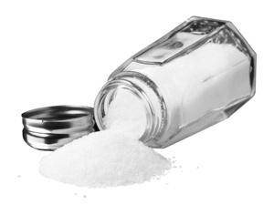

Acid-Base Properties of Salt Solutions and Acid-Base Titration
Callout
Acid-Base Properties of Salt Solutions
Salts are ionic compounds that are solid at SATP. A salt contains cations (positively charged ions) and anions (negatively charged ions) arranged in a repeating crystalline pattern.

Salts That Produce Neutral Solutions
6.png)
When sodium chloride dissolves in water, therefore, the dissociated ions do not react with water and thus do not change the concentration of hydrogen ions or hydroxide ions: the solution remains neutral (pH 5 7). Examples of common neutral salts are sodium nitrate, NaNO3(s), and potassium chloride, KCl(s).
Callout
3.png)
Potassium ethanoate is another highly soluble salt. In an aqueous solution, the major entities are potassium ions, ethanoate ions, and water molecules. Experimental evidence shows that the pH is basic.
2.png)
2.png)
2.png)
Callout
An acid-base titration is a quantitative analysis of acids and bases; through this process, an acid or base of known concentration neutralizes an acid or base of unknown concentration.
TITRATION is the addition of precise volumes of a solution in a burette to a measured volume of a sample solution; often used to determine the concentration of a substance in the sample.
SAMPLE is the solution being analyzed in a titration.
TITRANT is the solution in a burette during a titration.
BURETTE is a calibrated tube used to deliver variable known volumes of a liquid during a titration.
1.png)
Callout
Acid-base titrations may be used to analyze a variety of characteristics of acids and bases.
In some cases, titration is used to determine the amount or concentration of a solute in a sample (as in the case of the food technologist).
In other cases, titration may be used to monitor the pH changes that occur during neutralization.
1.png)
Acid-Base Indicators
Acid-base indicators are chemicals used to determine whether an aqueous solution is acidic, neutral, or alkaline. Because acidity and alkalinity relate to pH, they may also be known as pH indicators.
2.png)
Examples of acid-base indicators1.png)
Phenolphthalein is a chemical compound with the formula C20H14O4 and is often written as "HIn" or "phph" in shorthand notation. Phenolphthalein is often used as an indicator in acid–base titrations. For this application, it turns colorless in acidic solutions and pink in basic solutions.